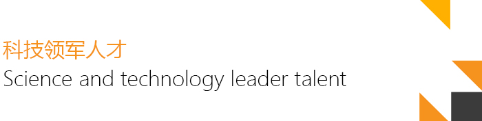

喵星科技作为一家追踪前沿科技，追求极致领先的高科技公司，始终把人才作为公司最为宝贵的核心资源，凝聚了国内外优秀的专家和软硬件工程师。对于适用于我们的人才，公司给予最大程度的荣誉和物质激励。核心岗位的技术人员，多次获得各级科技领军人物、劳动模范、科技之星等荣誉。
经过多年的探索，喵星也形成了一套行之有效的人才选拔和任用体系标准，可以归纳概括为八个字：“真诚，开放，分享，担当”。
真诚：真心实意，坦诚相待。以诚学习则无事不克，以诚立业则无业不兴。真诚在内心就是纯净无染，表现于外就是真实不虚、率真自然；如此则自然心怀坦荡正直无私。
开放：善于接纳新生事物和不同的意见，不因循守旧。拥有开放的意识，才能先人一步。紧跟时代节拍。顺应时势，以变应变，及时调整自己的行动，寻找出路。
分享：分享思想和学识，在交流之中团队共同进步和提高；分享成功的喜悦，让每位成员感受到团队成功的快乐；分享经验和教训，让团队成员不重蹈覆辙，少走弯路。分享是无私、大方、全局的气度，更是一个人的修养和品行。
担当：有多大担当才能干多大事业，尽多大责任才会有多大成就。担当就是责任，责任重于泰山。“疾风识劲草，烈火见真金。”要敢想、敢做、敢当，做我们企业的劲草、真金。
在业务能力优秀的同时，必须符合以上四条标准，才能晋级到核心工作岗位。
在人才的分工类型上，我们归纳总结了三大类人才：
具有高瞻远瞩的战略眼光，把握世界科技发展的趋势，研究判断科技行业发展的方向，对喵星硬件核心业务板块密切相关的芯片、电池、传感器及其他重要器件的发展趋势；喵星软件核心业务板块密切相关的大数据技术、移动互联技术、物联网技术的发展趋势；喵星养老服务核心业务板块密切相关的健康管理、远程医疗等有明确的研究和判断。为喵星各个业务板块做出五年、十年、十五年发展规划和路线。
善于技术检索查新，善于凝聚力量，统筹协调各方面资源。对于既定的战略规划，能够找到最合适的技术实现路径，并协调内外部资源所有资源，以最快速、最便捷、最具性价比的方式落实技术路线，将公司的战略规划落地。
熟练系统的掌握本专业知识体系。在技术研发的过程中，勇于创新，善于创新。能跳出固有思路，以创新思维解决问题。平时还要多了解相关专业的知识和技术，注重技术深度的同时，要有知识的广度，这样在与团队其他技术人员配合时才能做到高效默契。